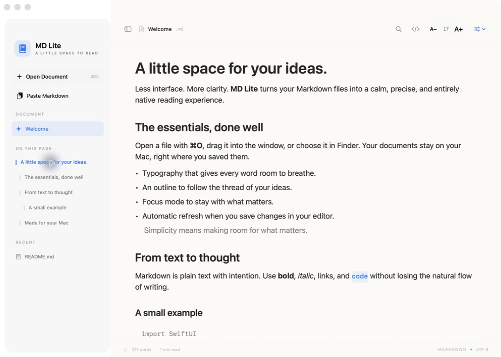
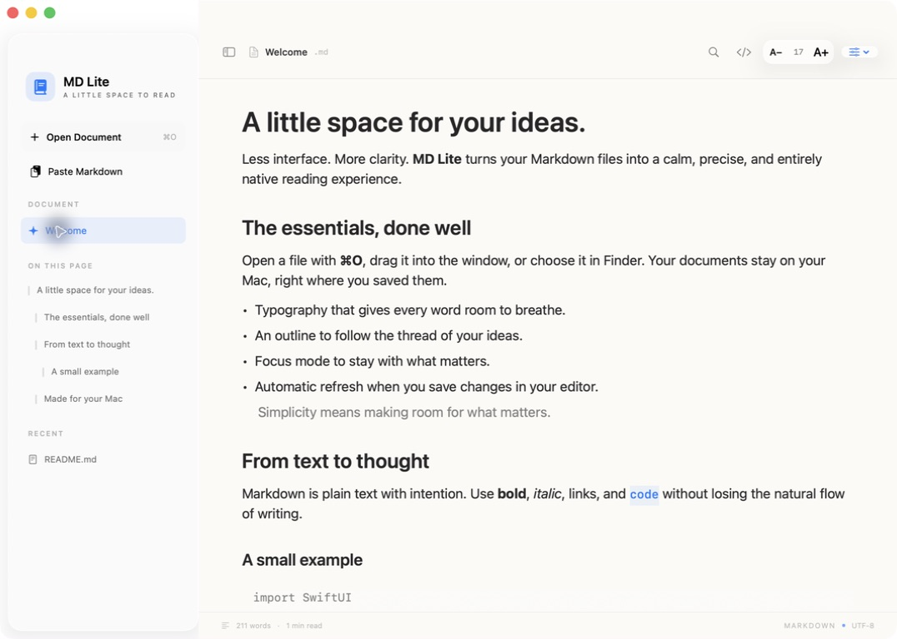
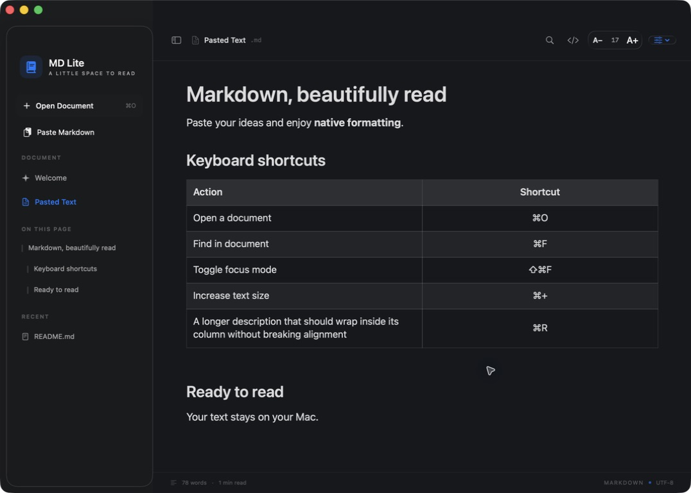

MD Lite
A little space to read — and write.
A lightweight, native Markdown reader and editor for macOS. Built with SwiftUI, AppKit, TextKit, and Swift Markdown. The whole app is under 4 MB.


Download MD Lite · Build from source · Shortcuts · Contribute
Three ways to look at a document
| Mode | Shortcut | What it is |
|---|---|---|
| Reading | ⌘1 | The finished document: typography, tables, images, diagrams. |
| Editor | ⌘2 | Write with the formatting in view. Markers such as ** or # only appear on the line you are editing. |
| Source | ⌘3 | Plain Markdown with syntax colors. |
| Split | ⌘4 | Source on the left, the finished page on the right, scrolling together. Drag the divider to resize. |
Press ⌘E to jump between reading and editing. Undo and redo (⌘Z, ⇧⌘Z) work across every edit, including checking a task in the reading view. Files you open save themselves as you type; new notes ask where to go the first time you press ⌘S.
GitHub Flavored Markdown
MD Lite follows the GFM specification and renders what GitHub renders:
Headings (ATX and Setext) with GitHub-style anchors, paragraphs, line breaks, and thematic breaks
Emphasis, strong, strikethrough, inline code, and backslash escapes
Inline, reference, and autolinks, including extended autolinks (
www.,https://, e-mail)Ordered, nested, and task lists — click a checkbox to check it
Tables with column alignment, rendered as native TextKit tables
Fenced and indented code blocks with syntax highlighting and a copy button
Block quotes and GitHub alerts (
> [!NOTE],[!TIP],[!IMPORTANT],[!WARNING],[!CAUTION])Raw HTML as it appears in real READMEs:
,,,, HTML tables, and comments. Script-like tags are filtered as GFM requires.Mermaid diagrams in
```mermaidblocks, drawn offlineYAML front matter
Tabs, panes, and working folders
Each window has its own tab strip. ⌘T opens a clean tab you can drop a file on, or open, create, or paste a document into; every tab keeps its own undo history and scroll position. Drag a tab or a file from Finder or the sidebar onto a document to see where it will land: the left or right half opens it in a side-by-side pane, the middle opens it as a tab there. ⇧⌘] / ⇧⌘[ switch tabs, ⌃⌘← / ⌃⌘→ move a tab between panes, and ⌥⌘W closes a pane, moving its tabs to the other one.
⌘W always closes the innermost thing first: a sheet or popover, then About or Settings, then the tab (and its pane when it was the last one); the app stays open. Open a whole folder with ⇧⌘O (or drop it on the window) to browse its Markdown files as a tree in the sidebar; hidden and generated folders such as node_modules are skipped, and ⌘-click opens a file in a new tab. Settings open with ⌘,.
Right-click a tab or any file in the sidebar to open it in a new tab or pane, save a copy, duplicate it, export it as HTML or PDF, print it, add it to Favorites, give it Finder tags and colors, reveal it in Finder, or copy its path. Hover a file to see its full path, or click the tab title for a breadcrumb.
A calm navigator
The sidebar outlines the document as a collapsible tree, follows you while you scroll, filters long outlines, and jumps with ⌥⌘↑ / ⌥⌘↓. Hide it with ⌃⌘S (or ⌘\), or press ⇧⌘F for focus mode, which hides everything but the text until you press it again (or Esc). Choose a narrow, normal, wide, or full text column in Reading Preferences.
Screenshots



Download
Requires macOS 14 Sonoma or later and Apple silicon.
Download the latest DMG from GitHub Releases.
Drag MD Lite into Applications.
Open a
.mdfile from Finder or press ⌘O inside the app.
Windows and Linux
Each release also ships MD Lite for Windows (MD-Lite-…-windows-x64-setup.exe, installs for the current user, no admin rights) and MD Lite for Linux (.AppImage and .deb). It is a separate, lightweight Tauri app in desktop/ that uses the system WebView: the same GitHub Flavored Markdown, HTML, alerts, code highlighting, and Mermaid rendering; Reading, Editor, Source, and Split modes with undo; tabs; working folders; autosave; the outline navigator; and Ctrl versions of the shortcuts. The Windows installer is not code-signed yet, so SmartScreen may ask you to confirm the first launch.
To make MD Lite open Markdown files on double-click, choose MD Lite ▸ Use MD Lite for .md Files… — a short guide walks you through it. Check for Updates… in the same menu compares your version with the latest GitHub release.
Shortcuts
Press ⌘/ inside the app to see them all.
| Action | Shortcut |
|---|---|
| Reading / Editor / Source / Split | ⌘1 · ⌘2 · ⌘3 · ⌘4 |
| Toggle reading and editing | ⌘E |
| Show or hide the sidebar | ⌃⌘S · ⌘\ |
| Focus mode | ⇧⌘F |
| New tab · Close · Settings | ⌘T · ⌘W · ⌘, |
| Next / previous tab · Close pane | ⇧⌘] · ⇧⌘[ · ⌥⌘W |
| Move tab to the left / right pane | ⌃⌘← · ⌃⌘→ |
| New window | ⇧⌘N |
| New note · Open · Open folder | ⌘N · ⌘O · ⇧⌘O |
| Save · Save As | ⌘S · ⇧⌘S |
| Undo · Redo | ⌘Z · ⇧⌘Z |
| Find · Find next · Find previous | ⌘F · ⌘G · ⇧⌘G |
| Bold · Italic · Strikethrough · Inline code · Link | ⌘B · ⌘I · ⇧⌘X · ⇧⌘K · ⌘K |
| Heading 1–3 · Body text | ⌥⌘1–3 · ⌥⌘0 |
| List · Numbered list · Task list · Quote | ⇧⌘7 · ⇧⌘9 · ⇧⌘L · ⌘’ |
| Code block · Table · Divider | ⇧⌘M · ⌥⌘T · ⌥⌘− |
| Continue a list · Indent · Outdent | ↩ · ⇥ · ⇧⇥ |
| Previous / next heading | ⌥⌘↑ · ⌥⌘↓ |
| Increase / reset / decrease text | ⌘+ · ⌘0 · ⌘− |
| Paste and read clipboard Markdown | ⇧⌘V |
| Reload from disk · Print | ⌘R · ⌘P |
| Keyboard shortcuts | ⌘/ |
Build from source
Use Xcode 26 or later. The package targets macOS 14 and uses Swift 5.9 or later.
git clone https://github.com/glozahn/md-lite.git
cd md-lite
swift test
./scripts/build-app.sh
open "dist/MD Lite.app"
The Windows and Linux app builds with Node 22 and Rust:
cd desktop
npm install
npm run tauri build
GitHub Actions builds both platforms and attaches the installers to each release (.github/workflows/desktop.yml).
Create a DMG with ./scripts/build-dmg.sh. scripts/notarize-app.sh signs with a Developer ID, notarizes, and staples the app; it reads your identity and App Store Connect key from environment variables or from a local, git-ignored scripts/notarize.env (see scripts/notarize.env.example). Certificates and private keys are never stored in the repository.
Privacy and weight
Documents stay on your Mac. Preferences and recent file paths are stored locally. MD Lite has no account, analytics, or telemetry.
Remote images are blocked until you click Show (or enable Always load remote images).
Mermaid runs offline in a hidden WebKit view with network access blocked. The library ships xz-compressed (about 750 KB) and is only loaded when a document contains a diagram.
Update checks make one request to the GitHub Releases API, only when you ask or when you enable automatic checks.
Contributing
Issues and pull requests are welcome. For rendering issues, include a small Markdown example, your macOS version, and the expected result.
Credits and license
Inspired by Markdown Guide, QuickMD, and Typora. MD Lite is an independent project and is not affiliated with them.
MD Lite is released under the MIT License. Swift Markdown, cmark-gfm, and Mermaid retain their own licenses; their notices ship inside the application bundle.